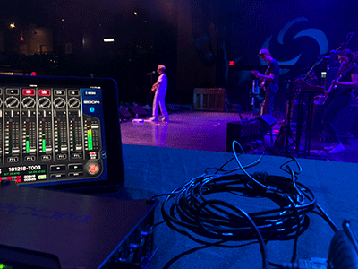
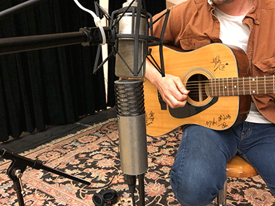
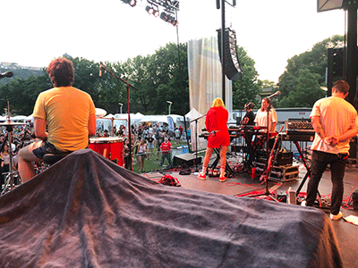
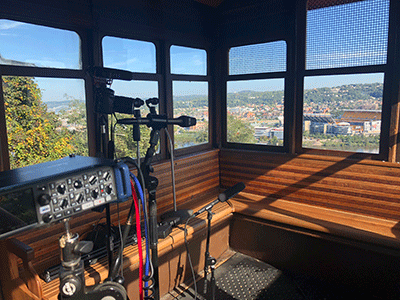
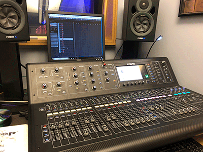
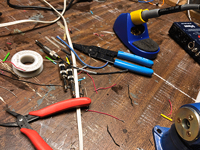

████████╗ ██████╗ ███╗ ███╗ ██╗ ██╗██╗ ██╗██████╗ ██╗ ███████╗██╗ ██╗ ╚══██╔══╝██╔═══██╗████╗ ████║ ██║ ██║██║ ██║██╔══██╗██║ ██╔════╝╚██╗ ██╔╝ ██║ ██║ ██║██╔████╔██║ ███████║██║ ██║██████╔╝██║ █████╗ ╚████╔╝ ██║ ██║ ██║██║╚██╔╝██║ ██╔══██║██║ ██║██╔══██╗██║ ██╔══╝ ╚██╔╝ ██║ ╚██████╔╝██║ ╚═╝ ██║ ██║ ██║╚██████╔╝██║ ██║███████╗███████╗ ██║ ╚═╝ ╚═════╝ ╚═╝ ╚═╝ ╚═╝ ╚═╝ ╚═════╝ ╚═╝ ╚═╝╚══════╝╚══════╝ ╚═╝

Recording
Live Recording
Mixing
Post Production
The Allegheny Front
The Moth, Pittsburgh
Location Sound
Boom Op
Sound Mixer
Gallery





